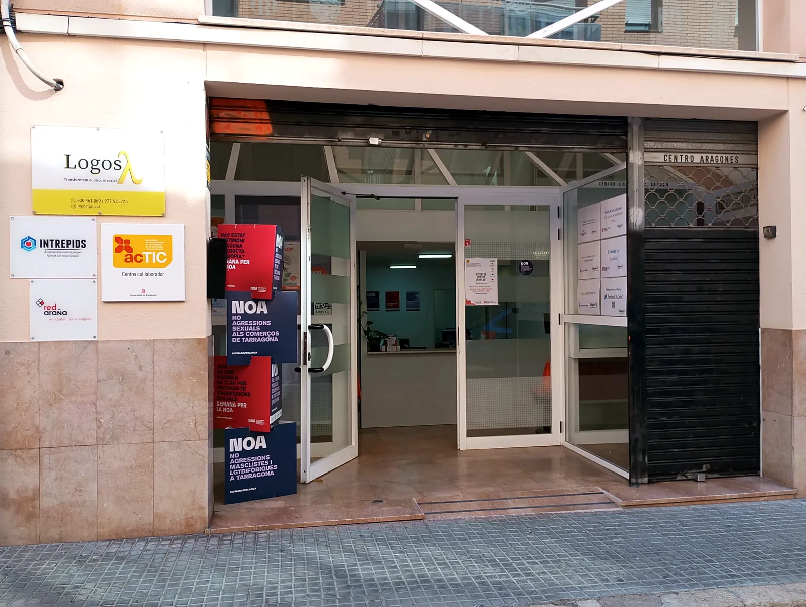

Contacta amb nosaltres
Com us podem ajudar?
Per a consultes generals, informació o qualsevol qüestió relacionada amb Logos, podeu contactar amb nosaltres directament o enviar-nos el formulari. Si sou una administració o entitat, des del mateix formulari podeu sol·licitar una reunió.
Telèfon977 61 57 23
Mòbil i WhatsApp630 46 15 60Escriu-nos per WhatsApp
Correu electrònicinfo@logostgn.cat
Aquests són els nostres únics canals oficials. Logos mai et demanarà diners ni contrasenyes.
On som
Ens trobareu a Tarragona
Carrer Pau del Protectorat, 14
43004 Tarragona
Horari d'atenció
Obrir a Google MapsDilluns a dijous8 a 14 h · 16 a 20 h
DivendresTancat

Així és la nostra entrada · Pau del Protectorat, 14